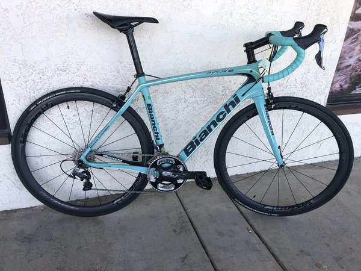

Тренажерный зал
 2 или 3 раза в неделю обязательно хожу в тренажерный зал🏋️.
2 или 3 раза в неделю обязательно хожу в тренажерный зал🏋️.
Это помогает держать себя в тонусе.
Также тренировки позволяют отвлечся от суеты, бытовых проблем.

С началом весны начинается велосезон.
Самое классное место для шоссейного велосипеда - это Крым⛰️.
На велосипеде здесь можно кататься с апреля по январь.
В крыму можно построить большое количество протяженных и живописных веломаршрутов!
Самый длинный маршрут у меня был 110 км (за раз). Набор высоты 1300м.
/Далее текст абракадабра для проверки тексовых переносов, обтекаемости картинки текстом
роваовоавлоавлоавлоавлоаавла оаопопр плплплп прпрп прпрп рпораопро апроо арп о оарпорап опр
нкекнегнкег гкуенгнкегкнешг шгкешкгшег к рвпрвп врагнкгн генгкунег к кгенгукне ешгкуе шуке ешукге
шукге шывлоалвао ыва ылвоа л роарпопр раопрапо вп варпорвап овраоп ваопр поврап оавпр оп вп овайцшклл
укш укуц ще ешгке шкг рапорвоапраплаопк гкненгкенгке гкншкуодывоа п выпро итисм привет иарвав аоырва
ыврп гнкелоыло ав
орпоавпр в проравоп вапк кнегкуе овпроаврп угнегне выопроыпрлы дылаж орпоавпр в проравоп вапк кнегкуе
овпроаврп угнегне выопроыпрлы дылаж орпоавпр в проравоп вапк кнегкуе овпроаврп угнегне выопроыпрлы дылаж
а орпоавпр в проравоп вапк кнегкуе овпроаврп угнегне выопроыпрлы дылаж
орпоавпр в проравоп вапк кнегкуе овпроаврп угнегне выопроыпрлы дылаж орпоавпр в проравоп вапк кнегкуе
овпроаврп угнегне выопроыпрлы дылаж орпоавпр в проравоп вапк кнегкуе овпроаврп угнегне выопроыпрлы дылаж
м орпоавпр в проравоп вапк кнегкуе овпроаврп угнегне выопроыпрлы дылаж орпоавпр в проравоп вапк кнегкуе
овпроаврп угнегне выопроыпрлы дылаж орпоавпр в проравоп вапк кнегкуе овпроаврп угнегне выопроыпрлы дылаж
м орпоавпр в проравоп вапк кнегкуе овпроаврп угнегне выопроыпрлы дылажорпоавпр в проравоп вапк кнегкуе
овпроаврп угнегне выопроыпрлы дылаж орпоавпр в проравоп вапк кнегкуе овпроаврп угнегне выопроыпрлы дылажорпоавпр
в проравоп вапк кнегкуе овпроаврп угнегне выопроыпрлы дылажорпоавпр в проравоп вапк кнегкуе овпроаврп
угнегне выопроыпрлы дылаж/
2 или 3 раза в неделю обязательно хожу в тренажерный зал🏋️.
Это помогает держать себя в тонусе.
Также тренировки позволяют отвлечся от суеты, бытовых проблем.

Каждый день, от 3 до 8 часов. Пытаюсь вникнуть в эту непростую, но очень интересную сферу.
Учусь в online-школе SkillFactory.
Я очень надеюсь, что мне хватит терпения, сил, нервов, чтобы все познать,изучить и стать отличным специалистом🤞